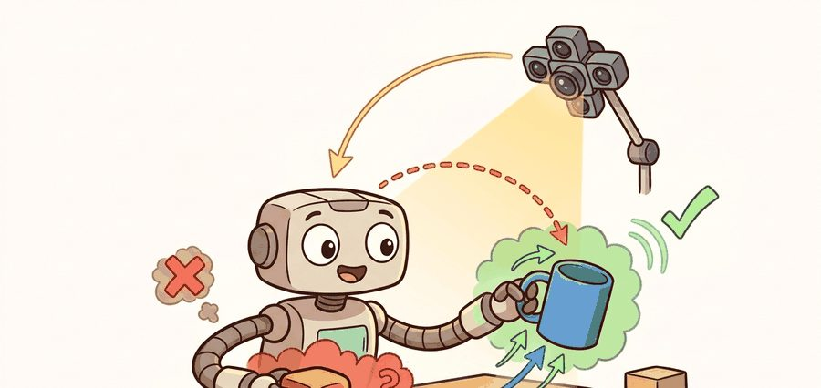
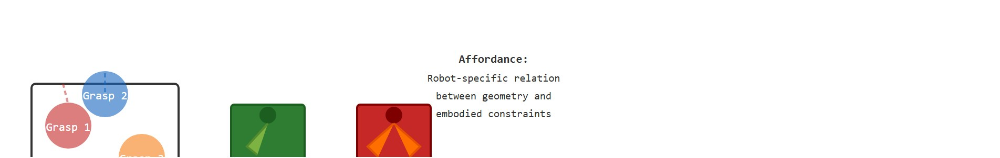
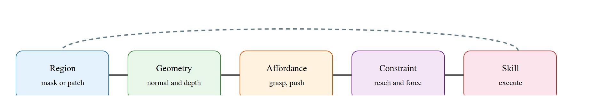

"Affordance is the promise that perception can name what the body can actually do."
A Patient Embodied AI Agent

This section assumes familiarity with gripper kinematics introduced in section 5.6 and with the skill-controller interface described in section 26.5. The affordance-to-3D-geometry pipeline is extended in section 28.2, where surface normals and approach directions are computed from neural scene representations. Affordance scoring for specific hand types recurs in Part IX alongside dexterous manipulation in section 43.2.
A robot staring at a cluttered countertop sees pixels. A useful robot sees a mug handle it can grip, a lid it can push aside, and a bottle it should avoid knocking over. That gap between seeing and acting is exactly what affordance prediction closes. Modern manipulation pipelines fail not because they misclassify objects but because they cannot answer "where, exactly, can my gripper make contact, and what will happen if it does?" This section builds the machinery to answer that question: detect graspable regions from RGB-D input, score them against gripper geometry and reach constraints, and convert the winner into an executable contact frame the robot can actually use.
Affordance prediction must bind perception to embodiment; this is called the perception-to-action contract, and without it a robot can see a handle perfectly yet never grasp it. A graspable region, traversable gap, or pushable surface is meaningful only relative to gripper geometry, base footprint, force limits, and task goal.
The contract here maps visual evidence to executable possibilities: affordance label, contact frame (the 3D position and orientation at which the gripper is commanded to touch the object), body constraint, confidence, action primitive, and success predicate.
Think of a rock climber reading a cliff face. A handhold is not graspable in the abstract: it is graspable for hands of a certain span, arms of a certain reach, and a body positioned at a certain stance. A hold that a tall climber reaches easily is completely off the menu for a shorter one at the same stance, even though both see the same rock. The perception-to-action contract works the same way: what counts as a graspable region is always relative to the specific body that must act on it.
An affordance becomes embodied knowledge when it narrows the action set to options that the current robot can execute under the current constraints.
A graspable region that ignores the body attempting the grasp is not a graspable region: it is a wishful annotation. The diagram below makes this concrete: the same three contact regions on one object yield different admissible grasps for two different grippers, so an affordance is a relation between geometry and a specific embodiment rather than an intrinsic property of the object.
Figure 27.5.1 should be read as an affordance contract: candidate region, contact frame, gripper constraint, confidence, and verifier decide whether the grasp or push is admissible.


Having seen visually that the same regions yield different admissible grasps for different bodies, we now need a scoring rule that makes that dependence explicit as a function of both region evidence and robot constraints.
An affordance map scores actions over image or 3D regions under robot constraints.
$A(r,a)=P(\mathrm{success}\mid \phi(r),a,\theta_{\mathrm{robot}}),\quad a^*=\arg\max_{a\in\mathcal A} A(r,a)-\lambda C(a)$, where $\arg\max$ selects the action $a$ that produces the largest value of the score, i.e. the single best-ranked candidate rather than the score itself
The feature vector $\phi(r)$ may include mask shape, depth, surface normal, material cues, and semantic features. The cost term $C(a)$ penalizes collision risk, reach limits, force limits, or task time.
So far: an affordance map $A(r,a)$ scores each region-action pair by success probability, $\arg\max$ picks the single best action, the feature vector $\phi(r)$ describes what the region looks like, and the cost term $C(a)$ describes what it would cost the robot's body to act on it.
This formulation matters in practice because raw visual confidence is not a safe proxy for executability. A handle that scores 0.95 on a learned heatmap may sit 2 mm beyond the arm's reach envelope or require a wrist angle that violates joint limits. It is the same as trying to read fine print through a fogged window: the text is there, yet you cannot recover the information. Collapsing success probability and embodiment cost into a single score keeps the controller from receiving a pose it cannot physically reach. On a real robot the unreachable pose produces a motion-plan failure or, worse, a silent approximation that damages the object or the gripper.
To build $\phi(r)$, the pipeline back-projects the 2-D region mask through the calibrated depth map and recovers a 3-D point cluster. It fits a local tangent plane to that cluster, then estimates the surface normal and principal curvature. A backbone encoder supplies semantic and material cues, and the pipeline concatenates them with those geometric descriptors. A shallow MLP or a ranking function trained on grasp-outcome labels scores the resulting vector. This step produces $A(r,a)$ for each candidate region-action pair before the pipeline applies the constraint term.
| Design Choice | Use When | Control Risk |
|---|---|---|
| Heatmap | Fast image-space grasp or push proposals | Must be lifted to metric pose before control. |
| Object-centric affordance | Reusable skills such as open, pour, wipe | Object identity can hide local contact constraints. |
| 3D contact affordance | Dexterous manipulation and humanoid hands | Requires reliable geometry and force-aware execution. |
Code Fragment 27.5.1 scores candidate grasp regions by combining learned affordance probability with reach and collision costs. The small table-like arrays stand in for a vision model output.
# Choose a graspable region from affordance and cost terms.
# The selected region must be promising and executable by the robot.
import numpy as np
affordance = np.array([0.88, 0.74, 0.67])
reach_cost = np.array([0.35, 0.08, 0.05])
collision_cost = np.array([0.10, 0.06, 0.30])
score = affordance - 0.6 * reach_cost - 0.8 * collision_cost
print(np.round(score, 3))
print(int(score.argmax()))The output ranks region 1 first only after embodiment costs enter the score. On raw affordance alone, region 0 wins at 0.88; with the reach and collision penalties, region 1 wins at 0.644 against region 0's 0.590. The index 1 thus means "most executable region under current geometry," not "most visually grasp-like patch." That gap between visually graspable and actually executable is the entire problem affordance scoring exists to solve.
Trace the selection with the actual numbers from Code Fragment 27.5.1, using $\text{score}=A-0.6\,C_{\text{reach}}-0.8\,C_{\text{collision}}$.
argmax over [0.590, 0.644, 0.400] returns index 1. Notice the ranking flips: by raw affordance the order is 0 > 1 > 2, but after embodiment costs it is 1 > 0 > 2. The winner changed because of the body, not the pixels.
A common assumption is that an affordance is an intrinsic property of an object, meaning the handle of a mug is "graspable" in the same way that its color is "red," independent of any observer. In embodied AI this assumption is wrong: an affordance is a relation between the object and a specific robot body, including its gripper geometry, reach envelope, force limits, and current pose. A region that is graspable for a parallel-jaw gripper with an 8 cm opening may be completely inadmissible for a suction cup or a three-fingered hand on the same object in the same scene. The correct mental model treats affordance as a conditional probability conditioned on both the object's local geometry and the robot's full embodiment parameters, which is why the constraint term $C(a)$ in the scoring formula is not optional.
Production grasp pipelines on the Franka Panda and Kinova Gen3 typically chain three concrete components: a GQ-CNN (Grasp Quality Convolutional Neural Network, a network that predicts grasp success probability directly from a depth patch) or Contact-GraspNet backbone trained on GraspNet-1Billion (approximately 1 billion annotated grasp poses across 97 000 scenes, as of the 2020 release) to produce per-region grasp quality scores; Open3D for point-cloud normal estimation and collision checking against a voxel occupancy grid built from the wrist-mounted RealSense D435 stream; and the robot's own MoveIt2 inverse kinematics (IK) solver to filter out poses that exceed joint limits or violate the 3 kg payload constraint. Each library shortens one stage, but none of them handles the handoff between stages: the region-to-skill contract (contact frame, uncertainty estimate, failure label) must be written explicitly, or a 10 ms timing mismatch between the perception thread and the controller thread will silently corrupt the grasp pose before execution begins.
When lifting an image-space affordance heatmap to a metric grasp pose, call open3d.geometry.PointCloud.estimate_normals() with a search_param radius matched to your sensor resolution before computing approach directions. The default radius of 0.1 m is calibrated for desktop-scale scenes; on a tabletop with objects under 5 cm, shrink it to 0.01 to 0.02 m or normals average over too many neighbors and the approach vector points into the table. Set fast_normal_computation=False unless you are operating under a hard real-time budget, because the covariance-based method is substantially more accurate on noisy RGB-D data. After estimation, call orient_normals_towards_camera_location() so all normals point toward the sensor rather than flipping arbitrarily between neighboring surface patches.
An affordance is not a permission slip, as Figure 27.5A illustrates with a candidate region that is rejected by reach and collision constraints before grasping. A mug handle may be visually graspable but unreachable from the current arm pose, blocked by clutter, or unsafe under the current force limit.
A service robot loading a dishwasher should score regions by grasp success, collision with nearby dishes, wrist clearance, and whether the chosen contact leaves the object in a stable orientation for placement.
Amazon's Sparrow picking system reportedly scores graspable regions on items in a cluttered tote, choosing between a suction cup and a parallel-jaw gripper based on the predicted contact affordance for each object's surface (exact scoring internals are not fully public). In practice, the same region that is suction-graspable on a flat boxed item is typically inadmissible for suction on a soft polybag, so the affordance score is explicitly conditioned on which end-effector the arm is currently carrying. This embodiment-conditioned scoring is plausibly what lets one arm handle a catalog of millions of distinct SKUs without per-item programming.
For Affordances and graspable regions, the perception result must answer what action changed, what uncertainty changed, and what log would reproduce the decision. Otherwise the output is still visualization, not embodied evidence.
Affordance scores trained on one robot body silently fail on another. A grasp region scored for a parallel-jaw gripper with 8 cm opening may be entirely inadmissible for a suction cup or a three-fingered hand, because the contact geometry, approach direction, and force distribution are fundamentally different. When a model is ported to a new platform, the constraint term $C(a)$ must be re-parameterized for the new kinematics before any affordance score should be trusted in execution.
Because the scoring rule and its constraint term only earn trust when their predictions survive contact with a real body, affordance quality has to be measured by what happens when the robot actually acts, not by heatmap appearance alone.
An affordance is validated by a completed action, not by a confident heatmap.
Evaluate affordances through attempted actions: record candidate region, body model, predicted primitive, force or clearance margin, execution result, and affordance failure label.
Perturb object pose, gripper size, surface friction, occlusion, and task goal, then check whether the affordance changes when the executable action should change.
Three active directions are reshaping affordance prediction as of 2024-2026.
Language-grounded 3D contact affordance. Vision-language models are being fine-tuned to predict dense contact regions in 3D directly from natural-language task descriptions, moving beyond fixed category labels. OpenVLA (Kim et al., 2024, Stanford) demonstrated that a 7B-parameter vision-language-action model trained on 970k robot episodes can generalize affordance grounding to novel objects and instructions without per-object annotation, outperforming prior specialist detectors on real Franka evaluations.
Generalizable dexterous grasp synthesis from video. Diffusion-based contact models conditioned on human video demonstrations are producing hand-object contact maps that transfer to multi-fingered robot hands. DexGraspNet 2.0 (Wang et al., 2024, PKU) released 1.6 million dexterous grasp annotations across 6000 objects and showed that diffusion priors over contact geometry substantially close the sim-to-real gap for five-fingered manipulation, a benchmark the field is actively competing on.
Affordance estimation from neural radiance and Gaussian scene representations. Graspable regions are now computed directly inside implicit 3D scene models, bypassing the depth-map lift step entirely. GaussianGrasper (Zheng et al., 2024) embedded per-Gaussian semantic and grasp-quality features into a 3D Gaussian Splatting scene, enabling real-time grasp-region queries from arbitrary viewpoints without re-running a 2D detector.
Open problem for a PhD student: all three directions treat the robot body as fixed. A grounded affordance representation that remains valid across a family of gripper geometries (parallel-jaw, suction, multi-finger) without retraining, using only a kinematic description of the new end-effector as input, does not yet exist. Solving this would make affordance scores portable across robot platforms the way pre-trained vision backbones are portable across tasks.
Beginner (weekend): Build a tabletop grasp-region scorer in PyBullet that loads a single object (a mug or box from the YCB dataset), samples five candidate contact points on its surface, and ranks them using a weighted sum of reach cost and a simple heuristic affordance score based on surface normal alignment with the gripper approach axis. The key challenge is converting 2D image-space heatmap coordinates into 3D contact frames that the PyBullet IK solver will actually accept without silent pose corruption.
Intermediate (1-2 weeks): Implement an affordance-conditioned pick-and-place pipeline in Isaac Lab using a pre-trained Contact-GraspNet backbone to generate per-region grasp quality scores, then filter candidates through the robot's MoveIt2 reach envelope and an Open3D voxel collision grid built from a simulated RealSense depth stream. The key challenge is closing the perception-to-skill handoff loop so that uncertainty estimates and failure labels from each grasp attempt are logged in a replay buffer that a LeRobot training run can consume to fine-tune the affordance scorer on the specific robot body.
Goal (15-30 min): empirically confirm that the best graspable region shifts when you change the robot body, not just the object.
Tools: Python with numpy and open3d; one point cloud of a mug or box (the YCB object set ships several, or capture one with a RealSense). No robot hardware needed.
Steps: (1) Load the cloud and run estimate_normals() followed by orient_normals_towards_camera_location(). (2) Sample five candidate contact points on the surface and compute, for each, an affordance proxy from how well the local normal aligns with a fixed approach axis. (3) Define two grippers as a parallel-jaw width (say 4 cm vs 8 cm) plus a reach-cost function, then score every region with $A-0.6\,C_{\text{reach}}-0.8\,C_{\text{collision}}$ as in Code Fragment 27.5.1.
What to vary: the gripper opening width, the reach-cost weight, and the normal-estimation search_param radius (try 0.01 m vs the 0.1 m default). What to observe: whether the argmax region changes between the two grippers, and how the wrong radius makes normals on small objects point into the table, silently corrupting the approach vectors and the ranking.
Section 27.6 asks a deeper question: rather than passively scoring what is already visible, the robot can choose where to look next, turning perception itself into a deliberate action with an information cost.
Open3D. Geometry documentation. https://www.open3d.org/docs/release/tutorial/geometry/index.html
Provides practical primitives for normals, point clouds, and geometry processing used in affordance pipelines.
Meta AI. Segment Anything Model 2. https://ai.meta.com/research/sam2/
Promptable masks can provide candidate regions, but robotics still needs affordance and constraint scoring.
Can you name the representation, the consuming action, the uncertainty or freshness field, and the failure label for Affordances and graspable regions? If any one is missing, the section is not yet ready for a robot replay log.
Affordances are action-conditioned predictions over regions, and they become useful only after reach, collision, contact, and uncertainty constraints are attached.
Pick one household object and list three visible regions. For each region, score grasp, push, and avoid actions, then name the robot constraint that could veto the top score.